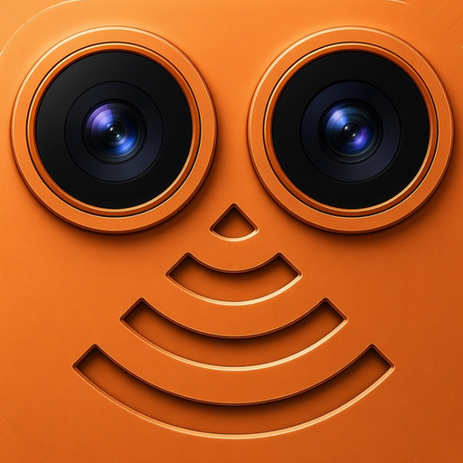

Old Phone, New Webcam
ReCam turns the iPhone or iPad you already own into a sharp camera for your Mac. Your Mac treats it like any other camera, over Wi-Fi or a USB cable. Pair once, then pick ReCam in your video app.
ReCam is two free apps: one for iPhone and iPad, and one for Mac from the Mac App Store.
Support and FAQ · Privacy Policy · Email travisboatman@carbonated.com